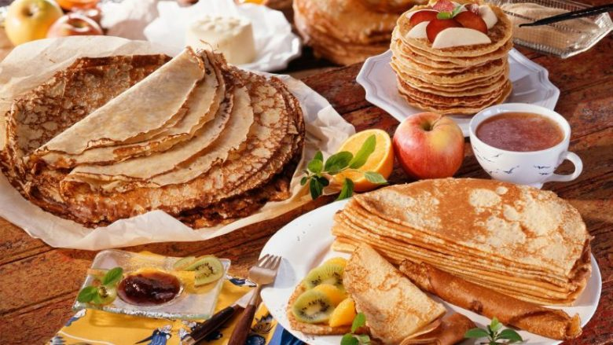

Palëpeta të shëndetshme me miell integral spelte
Të gjithë i duam palëpetat, mirëpo pakkush mendon për atë që ato mund të jenë edhe të shëndetshme.Përgatitni sipas recetës sonë, pastaj mbushni me pemë për versionin e ëmbël – apo me ajvar dhe djathë për versionin e njelmët, transmeton Telegrafi.Spelt është një bimë e ngjashme me grurin, vetëm se për nga përmbajtja është e pasur me më shumë proteina, dhe e pa procesuar është më e shëndetshme se gruri. Përbërësit: – 2 vezë, – 8 lugë miell spelte – 3 lugë liri të bluar, – 1 lugë vaj, – pak kripë, – 200 ml ujë me gaz, – 200 ml qumësht. Përgatitja: Përzieni të gjithë përbërësit që brumi të bëhet i dendur si edhe për palëpetat klasike.Tiganin lyeni me vaj dhe me leckë (që palëpetat të mos jenë tepër të yndyrshme), pastaj piqni kur tigani të nxehet.Për shkak të miellit integral, pjekja është më e gjatë.